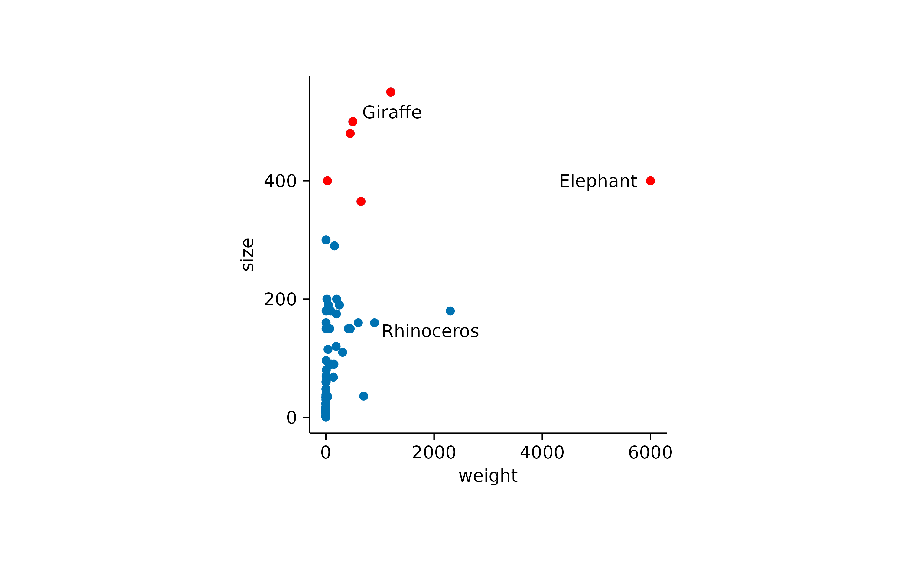

In this article, we will explore advanced plotting techniques offered in tidyplots. We will cover the rasterizing of plot components, data subsetting for highlighting selected data points, and the construction of powerful plotting pipelines. Moreover, we will discuss the visualization of paired and missing data, generate multiplot layouts and introduce the concepts of plot orientation, dodging, coloring, plot area padding, and more. We will conclude by discussing the compatibility of tidyplots with ggplot2.
Rasterizing
Generally, vector graphics like PDF and SVG are superior to raster images like PNG and JPG because they maintain high quality and sharpness at any scale. This makes them ideal for printing, resizing, and zooming without losing detail.
However, in plots with many data points, such as busy scatter plots or heatmaps, the presence of too many vector shapes can slow down performance without providing extra information. In these cases, rasterizing individual layers of the plot can be beneficial, as it reduces file size and rendering time, making the graphs more manageable and quicker to load or display.
Ideally, the rasterizing only affects the problematic layers of the
plot, while the rest of the plot still uses vector shapes. In tidyplots
this can be achieved with the arguments rasterize = TRUE
and rasterize_dpi which are available in
add_heatmap() and add_data_points()
functions.
In the examples below I intentionally chose a low resolution of of 30 to 50 dpi, to make the rastering more obvious. A typical resolution for print would be 300 dpi.
library(tidyplots)
gene_expression %>%
tidyplot(x = sample, y = external_gene_name, color = expression) %>%
add_heatmap(scale = "row", rasterize = TRUE, rasterize_dpi = 30) %>%
adjust_plot_area_size(height = 100)
And here another example using add_data_points().
study %>%
tidyplot(x = treatment, y = score, color = treatment) %>%
add_data_points(rasterize = TRUE, rasterize_dpi = 50)
Custom styling
Maintaining a consistent look in graphs throughout a paper enhances readability, supports accurate comparisons, and improves the communication of the paper’s findings.
In tidyplots you can create a custom style by defining a functional
sequence like the one below, called my_style().
my_style <-
. %>%
adjust_colors(colors_continuous_bluepinkyellow) %>%
adjust_font(family = "mono", face = "bold") %>%
remove_x_axis_ticks() %>%
remove_y_axis_ticks()Each individual plot can then be piped into my_style()
as the final step.
study %>%
tidyplot(group, score, color = treatment) %>%
add_mean_bar(alpha = 0.3) %>%
add_sem_bar() %>%
add_data_points_beeswarm() %>%
my_style()
energy_week %>%
tidyplot(date, power, color = energy_source) %>%
add_areastack_relative() %>%
my_style()
Data subsetting
In general, data wrangling should be done before plotting graphs, including subsetting the data to include only the points that should appear in the plot.
However, there are times when you have one large data frame that serves as the basis for multiple plots or when you want to highlight specific parts of the data while showing the entire dataset in the background. For these situations, tidyplots enables subsetting the data during the plotting process.
Let’s say you have a scatter plot of animals displaying their weight and size, and you want to highlight in red all animals larger than 300 cm.
animals %>%
tidyplot(x = weight, y = size) %>%
add_data_points() %>%
add_data_points(data = filter_rows(size > 300), color = "red")
In addition, you might want to show the name of the three animals with the highest body weight.
animals %>%
tidyplot(x = weight, y = size) %>%
add_data_points() %>%
add_data_points(data = filter_rows(size > 300), color = "red") %>%
add_data_labels_repel(data = max_rows(weight, n = 3), label = animal, color = "black")
You can also adjust the shape used for highlighting.
animals %>%
tidyplot(x = weight, y = size) %>%
add_data_points() %>%
add_data_points(data = max_rows(weight, n = 3), color = "red", shape = 1, size = 3)
Combining this with the previously described rastering of individual layers, you can choose to raster all data points, while keeping the highlight as a vector shape.
animals %>%
tidyplot(x = weight, y = size) %>%
add_data_points(rasterize = TRUE, rasterize_dpi = 50) %>%
add_data_points(data = max_rows(weight, n = 3), color = "red", shape = 1, size = 3)
Plotting pipelines
A unique feature of tidyplots is, that you can view and save multiple
stages or variations of a plot in a single pipeline by using
view_plot() and save_plot().
Let’s say you gradually build up a plot but want to save all intermediate stages as individual PDF files.
study %>%
tidyplot(x = treatment, y = score, color = treatment) %>%
add_mean_dash() %>%
save_plot(filename = "stage_1.pdf") %>%
add_sem_bar() %>%
save_plot(filename = "stage_2.pdf") %>%
add_data_points_beeswarm() %>%
save_plot(filename = "stage_3.pdf")Or you have a big data frame with multiple genes and you quickly want to generate plots for two of them.
gene_expression %>%
tidyplot(x = condition, y = expression, color = sample_type) %>%
add_mean_dash() %>%
add_sem_bar() %>%
add_data_points_beeswarm() %>%
view_plot(data = filter_rows(external_gene_name == "Apol6"), title = "Apol6") %>%
view_plot(data = filter_rows(external_gene_name == "Bsn"), title = "Bsn")

Note that in this example, the data argument together
with the filter_rows() function is used to subset the data
to one gene at a time. In addition, the title argument lets
you include a plot title to avoid confusing individual plots.
Paired data
When dealing with paired data, you might wish to connect paired data points. In the example below, all participants switched the treatment group after a certain time period. Thus for each participant the dataset contains a score “on placebo” and a score “on treatment”.
The connecting line can be added by using the group
argument of add_line() to specify the grouping
variable.
study %>%
tidyplot(x = treatment, y = score, color = group) %>%
add_mean_dash() %>%
add_sem_bar() %>%
add_line(group = participant, color = "grey") %>%
add_data_points()
As a final step, you might want to rearrange the order of the x axis labels to have grouped data points side by side.
study %>%
tidyplot(x = treatment, y = score, color = group) %>%
add_mean_dash() %>%
add_sem_bar() %>%
add_data_points() %>%
add_line(group = participant, color = "grey") %>%
sort_x_axis_labels(dose)
Missing data
Proper handling missing values (NA) is an essential
feature of R. It helps to prevent skewed results and make more reliable
inferences.
However, sometimes the handling of missing values can lead to
unanticipated results. For example, when looking at the proportions of
having zero, two, four or six legs in a (non-representative) dataset of
animals, add_barstack_absolute() delivers some interesting
insights.
animals %>%
tidyplot(x = number_of_legs, color = family) %>%
add_barstack_absolute()
While mammals in this dataset have either zero, two or four legs,
insects consistently have six legs, respectively. Now, when looking at
the same data with add_areastack_absolute() the picture
becomes a little obscure.
animals %>%
tidyplot(x = number_of_legs, color = family) %>%
add_areastack_absolute()
What happened? Because all insects have six legs, the function could not find another point on the x axis to draw a connecting line and plot the area underneath. As a result, insects completely disappeared. The same happened to fish and birds, which always have zero and two legs, respectively.
What the function needs is the information that insects with less
than six legs are missing in the dataset because they do not exist. Thus
it is save to replace the information count = NA with the
information count = 0.
You can fix the plot by setting replace_na = TRUE.
animals %>%
tidyplot(x = number_of_legs, color = family) %>%
add_areastack_absolute(replace_na = TRUE)
Multiplot layouts
Often times you have to generate identical plots for many different
subsets of the same dataset. For example, you might look at a gene
expression dataset like gene_expression including many
individual genes.
In such a case you can build your plot as usual using the entire
dataset and then split the plot by the gene name using the
split_plot() function.
gene_expression %>%
# filter down to 4 genes for demonstration
dplyr::filter(external_gene_name %in% c("Apol6","Bsn","Vgf","Mpc2")) %>%
# start plotting
tidyplot(x = condition, y = expression, color = sample_type) %>%
add_mean_dash() %>%
add_sem_bar() %>%
add_data_points_beeswarm() %>%
add_stats_asterisks(hide_info = TRUE) %>%
split_plot(by = external_gene_name, ncol = 2, nrow = 2)
In case there are too many genes to fit on one page, you can also
spread them across a multipage PDF. To do so, just specify the maximum
number of columns ncol and rows nrow you want
to have on one page.
gene_expression %>%
tidyplot(x = condition, y = expression, color = sample_type) %>%
add_mean_dash() %>%
add_sem_bar() %>%
add_data_points_beeswarm() %>%
add_stats_asterisks(hide_info = TRUE) %>%
split_plot(by = external_gene_name, ncol = 3, nrow = 3) %>%
save_plot("test.pdf")Orientation
Some plot elements like bars, areas or curve fits have an orientation
that needs to be inferred from the variables mapped to the
x and y axis. For example, the following code
results in vertical bars.
animals %>%
tidyplot(x = diet, y = weight) %>%
add_mean_bar(alpha = 0.3) %>%
add_sem_bar()
As expected, swapping the x and y arguments
results in horizontal bars.
animals %>%
tidyplot(x = weight, y = diet) %>%
add_mean_bar(alpha = 0.3) %>%
add_sem_bar()
In most cases the auto-detection of the orientation works well. In
case it does not fit your needs, you can manually set the
orientation to either "x" or
"y".
time_course %>%
tidyplot(x = score, y = day) %>%
add_curve_fit(orientation = "x") %>%
add_title("orientation = x")
time_course %>%
tidyplot(x = score, y = day) %>%
add_curve_fit(orientation = "y") %>%
add_title("orientation = y")
Padding
Per default, tidyplots gives the data points a little bit of extra space towards the border of the plot area.
animals %>%
tidyplot(x = weight, y = speed) %>%
add_data_points()
This padding, also known as expansion in ggplot2,
is 0.05 by default and can be changes using the
adjust_plot_area_padding() function.
animals %>%
tidyplot(x = weight, y = speed) %>%
add_data_points() %>%
adjust_plot_area_padding(top = 0.2, right = 0.2, bottom = 0.2, left = 0.2)
To completely remove the padding, you can use the
remove_plot_area_padding() function. However, note that
this will cause extreme values to fall onto the border of the plot area
and be partially cut off.
animals %>%
tidyplot(x = weight, y = speed) %>%
add_data_points() %>%
remove_plot_area_padding()
When using certain types of plot components, tidyplots automatically
adapts the padding to improve the look of the plot. For example, in
bar and area plots the padding between the
bar or area and the axis is removed.
study %>%
tidyplot(x = treatment, y = score, color = treatment) %>%
add_mean_bar(alpha = 0.3) %>%
add_sem_bar() %>%
add_data_points()
You can re-introduce the bottom padding like so.
study %>%
tidyplot(x = treatment, y = score, color = treatment) %>%
add_mean_bar(alpha = 0.3) %>%
add_sem_bar() %>%
add_data_points() %>%
adjust_plot_area_padding(bottom = 0.05)
Dodging
Dodging refers to the distance between grouped objects. The default in tidyplots is 0.8 and looks like this.
study %>%
tidyplot(x = group, y = score, color = dose) %>%
add_mean_bar(alpha = 0.3) %>%
add_sem_bar() %>%
add_data_points()
Decreasing the dodge_width in the
tidyplots() function call decreases the spacing between
grouped bars.
study %>%
tidyplot(x = group, y = score, color = dose, dodge_width = 0.4) %>%
add_mean_bar(alpha = 0.3) %>%
add_sem_bar() %>%
add_data_points()
Setting dodge_width = 0 results in completely
overlapping positions.
study %>%
tidyplot(x = group, y = score, color = dose, dodge_width = 0) %>%
add_mean_bar(alpha = 0.3) %>%
add_sem_bar() %>%
add_data_points()
This does not make too much sense for bars. But it makes a lot of
sense for lines and areas, which otherwise are
not aligned. Here is an example with dodge_width = 0.
time_course %>%
tidyplot(x = day, y = score, color = treatment, dodge_width = 0) %>%
add_mean_line() %>%
add_mean_dot() %>%
add_reference_lines(x = 10)
And here with the default dodge_width = 0.8. I added a
reference line at day 10 to make it easier to appreciate the
difference.
time_course %>%
tidyplot(x = day, y = score, color = treatment) %>%
add_mean_line() %>%
add_mean_dot() %>%
add_reference_lines(x = 10)
Coloring
tidyplots follows are quite straight forward approach when dealing
with color. The variable that should be encoded by colors is passed via
the color argument to the tidyplot()
function.
study %>%
tidyplot(x = group, y = score, color = dose) %>%
add_mean_bar(alpha = 0.3) %>%
add_sem_bar() %>%
add_data_points()
In ggplot2, the plotting package that underlies tidyplots, colors are
little more complicated. ggplot2 distinguishes between the fill color of
an object fill and the stroke color of an object
color. Some objects like bars can have both, while other
objects like lines just have a stroke color but no
fill.
Usually, tidyplots users do not have to care about these details.
Internally, tidyplots matches both fill and
color to the same color. And this is the color that comes
in as the color argument into the tidyplot()
function.
In some cases though, you might want to take manual control over the
fill and stroke color of specific objects.
For example, you want to plot a boxplot without the fill
color.
study %>%
tidyplot(x = group, y = score, color = dose) %>%
add_boxplot(fill = NA)
Or with a black stroke color.
study %>%
tidyplot(x = group, y = score, color = dose) %>%
add_boxplot(color = "black")
Or you want to have black text labels.
study %>%
tidyplot(x = group, y = score, color = dose) %>%
add_mean_bar(alpha = 0.3) %>%
add_mean_value(color = "black")
Alpha versus saturation
Sometimes you want to decrease the intensity of your colors.
study %>%
tidyplot(x = group, y = score, color = dose) %>%
add_mean_bar() %>%
theme_minimal_y()
One way to do this is to reduce the opacity by decreasing the alpha argument. Note how the horizontal lines start to shine through the bars.
study %>%
tidyplot(x = group, y = score, color = dose) %>%
add_mean_bar(alpha = 0.3) %>%
theme_minimal_y()
In the add_mean_bar() family of functions, in
add_violin() and in add_boxplots() functions,
tidyplots offers one additional method using the saturation
argument.
study %>%
tidyplot(x = group, y = score, color = dose) %>%
add_mean_bar(saturation = 0.3) %>%
theme_minimal_y()
Note how here the saturation is decreased without making the bars transparent. Thus, the horizontal lines do not shine through the bars.
Special characters
When it comes to scientific plots, titles often contain special characters like Greek symbols, subscript or superscript. For this purpose, tidyplots supports plotmath expressions.
Besides finding out how to use the plotmath
expression syntax, please note that in tidyplots all plotmath
expressions need to start and end with a $ character.
Moreover, you can not mix plotmath with plain text in one string,
instead the entire string needs to be a valid plotmath expression that
includes the plain text.
study %>%
tidyplot(x = treatment, y = score, color = treatment) %>%
add_data_points() %>%
add_mean_bar(alpha = 0.3) %>%
add_sem_bar() %>%
adjust_description(title = "$H[2]*O$",
x_axis_title = "$E==m*c^{2}$",
y_axis_title = "$TNF*alpha~level$",
legend_title = "")
ggplot2 compatibiliy
tidyplots is built on ggplot2, yet the two packages differ in several
key aspects. The most noticeable difference is probably that tidyplots
consistently uses the pipe %>% to add plot components
while ggplot uses + .
There is still a certain compatibility of both systems. For example,
you can transform a ggplot to tidyplot using the
as_tidyplot() function.
Also, you can add ggplot code to a tidyplot using the
add() helper function.
study %>%
tidyplot(x = treatment, y = score, color = treatment) %>%
add_mean_bar(alpha = 0.3) %>%
add(ggplot2::geom_point())
However, be ready to experience unexpected hiccups, when mixing ggplot and tidyplots, since ensuring compatibility in every edge case was not a priority when developing the tidyplots package.
What’s more?
To dive deeper into code-based plotting, here a couple of resources.
tidyplots documentation
Package index
Overview of all tidyplots functionsGet started
Getting started guideVisualizing data
Article with examples for common data visualizationsAdvanced plotting
Article about advanced plotting techniques and workflowsColor schemes
Article about the use of color schemes
Other resources
Hands-On Programming with R
Free online book by Garrett GrolemundR for Data Science
Free online book by Hadley WickhamFundamentals of Data Visualization
Free online book by Claus O. Wilke